Location Allocation Problem
程度★★ 難度★
Location Allocation Problem（Facility Location Problem）
問題的大意是：給定許多個地點，然後替這些地點設定一些聯絡站，使得每一個地點皆可被其中一間聯絡站聯絡到，而且越有效率越好。
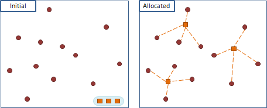屬於Location Allocation Problem的問題
深入地定義「效率」的意義之後，這個問題還可以細分成許多問題：令聯絡站離各地點的距離總和最小（p-Median Problem）。令聯絡站離各地點的距離最大值最小（p-Center Problem）。在各地設立聯絡站需要成本，但建立聯絡站後會從周遭地點獲得利益，令設立聯絡站後利益最大（Uncapacitated Facility Location Problem）。令各地點離聯絡站的中繼點不超過一定數量（Range Assignment Problem）。……等等。
p-Median Problem
程度★★ 難度★
p-Median Problem
給定很多個地點，然後替這些地點設定p個聯絡站，使得每一個地點皆可被其中一間聯絡站聯絡到，而且令所有聯絡距離的總和最小。
在現實生活中會遇到p-Median Problem，例如超商的物流通路，或者是有線電視的纜線鋪設等等。可惜p-Median Problem已被證明是NP-complete問題，目前尚未出現有效率的演算法能精準的解出這個問題。
這裡我想介紹的是當維度只有一維，並且每個位置的座標都是整數的p-Median Problem。在這種情況下，存在著多項式時間的演算法。
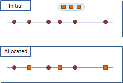簡化問題並觀察問題
首先來看看當p=1的情況。可以發現將聯絡站放在中位數是最好的。如果中位數是在兩個位置中間的話，則聯絡站可以游移在此兩個位置之間、其上，都不會改變所有聯絡距離的總和。
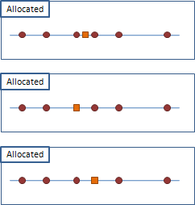證明並不難，只要試著移動聯絡站到各個地方，讓各個地點的聯絡距離此消彼長，然後觀察一下就會明白了。動手試試看吧！
另外也得到一個重要的結論：所有的聯絡站都可以挪至地點之上，而不會影響所有聯絡距離的總和最小值。
簡化問題並觀察問題
接著來看看當給定地點只有一個的情況。可以發現將全部的聯絡站放在該地點上是最好的。
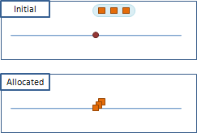可是聯絡站都疊在一起，有摩肩接踵、水洩不通的感覺。如此說來，設立太多聯絡站，反倒過猶不及——理當好好分配才對。說到分配，如果聯絡站大於給定地點數，只要將聯絡站安排在各個地點上，聯絡距離的總和就是零了。
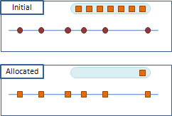簡化問題並觀察問題
為了要拉近聯絡距離，所有地點都得連向最近的聯絡站，而不會有捨近求遠的情形。換個角度來看，一個聯絡站只會連接周遭的地點，而不會有捨近求遠的情形。
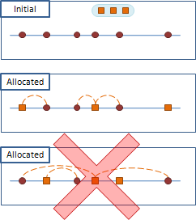根據這個性質，p-Median Problem可以重新想成是：依照地緣關係，把所有地點集中分配成p個區域，每一區設立自己的聯絡站。一旦分配好區域，馬上就能找出正確的聯絡站——中位數。
至此，p-Median Problem就成了如何分區的問題。
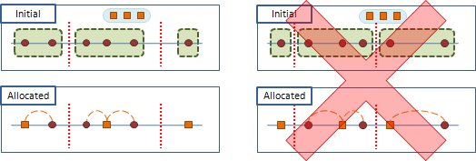簡化問題並觀察問題
把所有地點分區，並以中位數設定好聯絡站之後，如果發現有地點選擇聯絡站時捨近求遠，這就表示分區的方式不好。
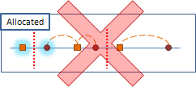那要如何分區才好呢？例如各個區域之間相鄰越遠越好？這裡就不再東拉西扯了，大家自行觀察看看吧。
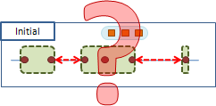p-Median Problem: Dynamic Programming
程度★★ 難度★★
分割問題的方法
聯絡距離的總和，可以以區為單位來分頭計算，最後再統計即可——這就是在分割問題。
分割問題的方法便是拿掉最邊邊的一區，同時也拿掉屬於該區的聯絡站，如此就漂亮的縮小了問題範疇，讓小問題與原問題類似（如果是從中間抽掉一區，反而會變得很難搞）。接著只要窮舉一個區的各種大小，便可以求得遞迴式。
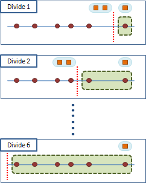分割問題時要注意不要讓剩下來的地點太少，而聯絡站卻過量的情況。妥善分配重疊的聯絡站，一定會使聯絡距離的總和變得更小的，所以沒有必要枚舉出會讓聯絡站重疊的分區方式。
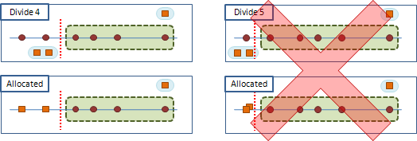
f(p, n) =
{ min( f(p-1, n-1) + d(n, n) ,
{ f(p-1, n-2) + d(n-1, n) ,
{ ... ,
{ f(p-1, p-1) + d(p, n) if p < n && n >= 0
{
{ 0 if p >= n && n >= 0
{ +inf otherwise
p：已設立了p個聯絡站。
n：已涵蓋了第1個到第n個地點。
f(p, n)：設立p個聯絡站，涵蓋第1個到第n個地點時，其聯絡距離的總和。
d(i, j)：第i個地點到第j個地點所構成的區域，其聯絡距離的總和最小值。
可利用中位數算得。
求出聯絡距離的總和最小值
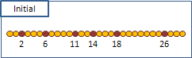由於d[i][j]已經被算好，因此增快了進行DP的時間。能夠預先算的就預先算，切勿將迴圈全寫在一塊，造成時間負擔！
令N為給定地點個數，P為聯絡站個數。計算一個子問題需時O(N)，全部共有O(N*P)個子問題，因此整體的時間複雜度是O(N^2 * P)。在一個子問題當中，要計算其中一種分區方式，其聯絡距離的總和，只需時O(1)。
優化
在這個問題當中，要求一個子問題的答案，會依序窮舉每個區域的分割點，並找出能讓總和最小的分割點。當分割點由左往右移動時，左邊小問題的答案正在遞增，右邊區域其聯絡距離的總和正在遞減。以上個段落的程式碼而言，就是k在移動時，f[i-1][k-1]會遞增，d[k][j]會遞減。
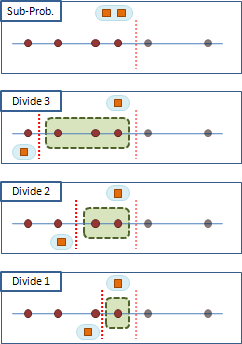不難發現，分割點設在最「均衡」的位置，會讓聯絡距離的總和最小。
由於這「均衡」的特性，讓我們找子問題的答案時更加省力。下圖中分別是兩個不同的子問題A與B，A相對於B算是比較小的子問題，B只比A多出了一個地點。
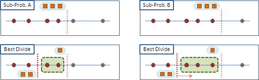B若是採用A的最佳分割點，則造成了B當中左端與A相同、右端卻比A大。由於A的最佳分割點是「均衡」的，所以B的最佳分割點：一、儘管右端加大，保持現況仍可「均衡」；二、因為右端加大，分割點要往右移動才會「均衡」。讀者可試證之。
另外，下圖中的子問題C與D，D比C多出了一個連絡站，也有均衡的現象。
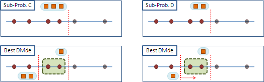計算一個子問題，只需參考與其相近的子問題，就可以快速求得分割點！在這個問題中，要計算f(p, n)，只需先找到f(p, n-1)或f(p-1, n)的分割點，然後移動幾個位置後，就能判斷出分割點。
雖然這個段落的文字很多，但是概念並不很難，花點時間想通吧！總之就是這個問題的遞迴式很有特色，使得子問題們的最佳分割點會很有關係啦！
求出聯絡站的設置方式，只求一種
求出聯絡站的設置方式，求出全部
在實行Dynamic Programming要注意等於的情況。
找路徑時也要注意聯絡站可以左右游移的情況。
最後還需要寫個遞迴來窮舉。我懶得寫了。
一些跟p-Median Problem有關係的題目。
UVa 662
p-Center Problem
程度★★ 難度★
p-Center Problem
給定很多個地點，然後替這些地點設定p個聯絡站，使得每一個地點皆可被其中一間聯絡站聯絡到，而且令所有聯絡距離的最大值最小。
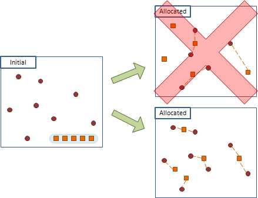這個問題也可以想做是：各個聯絡站各自使用一個圓，以自己為圓心，向外擴張以包住其負責的地點，然後讓最大的圓的半徑越小越好。
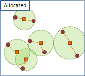p-Center Problem最實用的地方就是設立無線網路基地台。基地台在放射電波時，距離地點越遠，則需要的能量就得越強、越耗費電能，而跟地點數目無關。為了節省電能，所以要適當的安排基地台的位置，縮短電波的放送距離。
當然在這裡我們依舊只討論一維的情況。
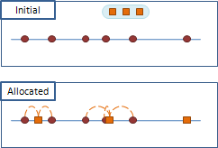簡化問題並觀察問題
首先來看看當p=1的情況。可以發現將聯絡站放在相離最遠的兩個地點的正中間是最好的。應該不用證明了吧？
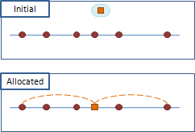另外也有一些性質和p-Median Problem類似，像是分區、捨近求遠、聯絡站過多。這裡不再複述，請參考之前的章節。
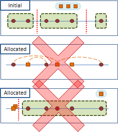至此，這個問題已變成要找最寬的區域，並讓它越小越好。把所有的地點集中分配成p個區域後，找出最寬的區域，求其寬度的一半，即是答案。
因為p-Median Problem只看最寬的區域的大小。所以其他的區域，不論多大多小都無所謂，只要小於或等於那個最寬的區域就可以了。在這種情況下，分區的時候，可以直接設定每個區域都跟最寬的區域一樣大，儘量的涵蓋越多地點；若能涵蓋，則表示該分區方式可行。這麼做並不會違背題幹。
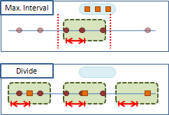p-Center Problem: Dynamic Programming
程度★★★ 難度★★
優化
一維的p-Center Problem可以用Dynamic Prgoramming來解決，方法就如同p-Median Problem的解決方法一樣。值得一提的是，p-Center Problem的優化可以做得更好，讓時間複雜度降低為O(N*P)。
分割點往右移動時，一旦發現分割點右方區域的寬度，已經小於分割點左方最寬的區域的寬度時，就沒有繼續讓分割點往右的必要，繼續往右只會讓子問題的答案變大。。
計算子問題f(p, 1)到f(p, N)的時候， 分割點由1開始往右移動，途中退後N次，最後頂多就移動到N， 所以分割點最多移動2N次， 也因此計算子問題f(p, 1)到f(p, N)總計只需要O(N)時間。 對每一個p來說， 計算其一連串的子問題f(p, 1)到f(p, N)都是O(N)時間， 所以整體的時間複雜度就是O(N*P)了。
再優化
【待補文字】
p-Center Problem: Trial and Error
程度★★ 難度★
窮舉所有可能的答案
p-Center Problem的答案是「最寬的區域」其寬度的一半，我們所要找的是「最寬的區域」，只要窮舉區域所有可能的位置，其中有一個一定就會是「最寬的區域」。
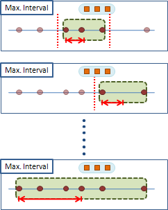令N為地點數目，考慮區域的左端位置和右端位置，所有可能的答案就有O(N^2)個。枚舉一個只需O(1)時間，所以枚舉全部的答案需時O(N^2)。
一一驗證答案
先前提到了許多p-Center Problem的性質，都可以用以驗證答案。
因為每一個地點都必須屬於某一區，所以可以從第一個地點開始劃分區域。設定所有區域的寬度，為「最寬的區域」的寬度，並且讓各個區域儘量涵蓋越多地點越好。劃分好區域後，看看該劃分方式可不可行，看看各區域是否有涵蓋所有地點。
「最寬的區域」寬度適中，分區數正確，可以成為一個解答：
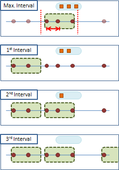「最寬的區域」寬度太大，分區數太少，可以成為一個解答：
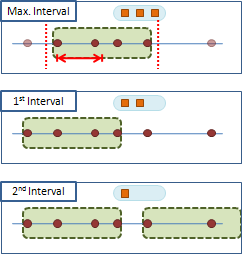「最寬的區域」寬度太小，分區數太多，不可能成為解答：
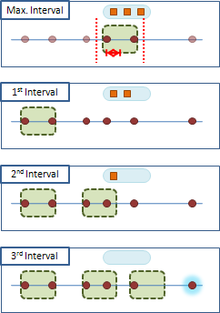最後，從全部通過驗證的答案中，找出最小值，即是正確答案。
所有可能的答案為O(N^2)個，驗證一個答案需時O(N)，故整體的時間複雜度是O(N^3)。
答案的上限，是涵蓋全部地點的區域，其大小的一半（最左與最右的兩個地點的距離的一半）；下限則可以簡單定義成0（或者是連續的p個地點，其兩端距離最小值的一半）。
答案恰有遞增遞減性質，可以使用Binary Search
「最寬的區域」的寬度適中、太大時，一定可以成為解答；「最寬的區域」寬度太小時，一定不可能成為解答。有了這樣的性質，就可以使用Binary Search，找出成為解答與不能成為解答的分界點。
更深入來看，「最寬的區域」越寬，得以分出越少區；「最寬的區域」越窄，得以分出越多區。「最寬的區域」寬度遞增時，區域數目則遞減。
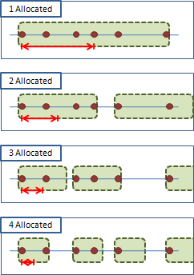現在，時間複雜度變成：
一、排序O(N^2)個答案，需時O(N^2 * logN^2) = O(N^2 * 2logN) = O(N^2 * logN)。
二、用O(N^2)答案進行Binary Search，會搜尋到O(logN^2) = O(2logN) = O(logN)個答案。驗證一個答案需時O(N)，所以搜尋答案的時間總共為O(NlogN)。
時間複雜度為上述兩者相加，為O(N^2 * logN)。
依照答案大小順序窮舉
固定「最寬的區域」的左端後，右端往右移動，區域就會越來越寬。固定左端後，可以很輕易的按照寬度大小枚舉區域。
左端一共有N種情形，利用Merge Sort的概念，可以想做是N條排序過的陣列要進行合併，用O(N^2)時間就能完成。
現在，枚舉和排序的時間合起來為O(N^2)，搜尋的時間為O(NlogN)，整體的時間複雜度成為O(N^2)。
p-Center Problem: Trial and Error
程度★★ 難度★
窮舉所有可能的答案
方才我們窮舉的是區域位置，然後用區域寬度驗證答案。我們何不直接窮舉區域寬度就好了？
令左右兩端的地點距離為L，可知區間寬度介於[0,L]之間。當答案為整數時，用Binary Search會搜尋到O(logL)個答案。驗證一個答案需時O(N)，故整體的時間複雜度為O(NlogL)。
求出聯絡距離的最大值，最小可為多少
求出聯絡站的設置方式，只求一種
拿數區域個數的程式碼來改一改就好了。
UVa 714 907
p-Center Problem: ???
程度★★ 難度★★
p-Center Problem: ???
我用google找到一篇號稱是O(log(N*P))的演算法。我自己沒有空去讀它，各位可以先自己加減參考看看。
Sourour Elloumi, Martine Labbé, Yves Pochet. A New Formulation and Resolution Method for the p-Center Problem. Informs Journal on Computing, 2004, 16(1), 84-94.